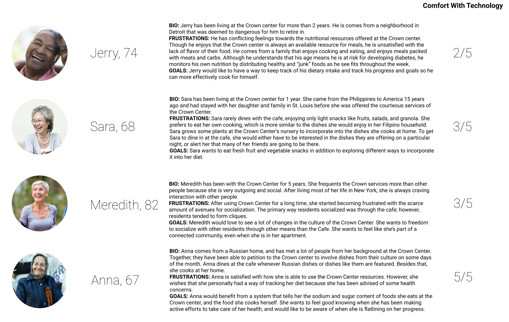

EATERGY
OVERVIEW
Context
Students from the Understanding Health and Wellbeing Interaction Design class at Washington University were tasked with developing a solution to address the nutritional needs of residents at the Crown Center.
Crown Center
The Crown Center opened in 1967 with the promise to serve residents under their founding Jewish principles. Residents are primarily Russian, Chinese, and white Americans, but the Crown Center is home to a diversity of people and cultures. The center offers Kosher meals available through their café on the main floor, and often shuffles between “special” meal nights that suit non-traditional kosher tastes. In addition to these services, the center offers a community gardening space where residents can harvest their own vegetables and spices.
Problem Statement
Upon conducting research about the satisfaction of the dining experiences at the Crown center, we recognized that the food options were limiting some residents, and in fact shying them away from the café. Many residents do not eat at the café due to a lack of flavor and strict kosher rules. Instead, many residents took to cooking for themselves in their personal spaces. These residents are prompted to eat alone for several reasons, including having the option to cook to their preferred taste, to avoid social awkwardness, and out of general convenience.
RESEARCH
Interviews
In our interviews with Crown Center residents, a few themes emerged, as shown in the map above. One theme was cliques. The residents often sat at the same place whenever they attended the cafe and sat with the same people. This proved problematic for seniors who wanted to meet new people. Moreover, nutrition was a concern for our interviewees, one of whom was prediabetic and needed to monitor their food intake. Our other interviewee did not have any dietary restrictions but noted that a lot of residents did have restrictions such as a non-gluten diet. A third theme was the tendency to eat alone because it was more convenient. Residents could put on their own music, watch their own shows, or cook their favorite meals.
Interview subject A (we will refer to her as Susan) is an elderly woman who moved to the Crown center in 2016. She estimates eating at the Crown Center cafe about 8 times a month, often for breakfast, because they open early.
Interview subject B (we will refer to him as Thomas) is an elderly pre-diabetic man who moved to the Crown Center in 2012. He says he has benefitted from the educational programs about nutrition that are offered at the Crown Center. He learned to change his diet by eating more vegetables and fruits and less sweets and carbonated drinks. After having been told of his pre-diabetic condition, Thomas made efforts to improve his eating behaviors but he admitted to still eating junk foods every once in a while.
Susan used to eat “anything” because she was physically active. After being limited to a wheelchair, she became cautious of the foods she eats out of fear of gaining weight. Thomas and Susan both enjoy the beef stew and chili offered at the cafe a few times a month. They share feelings of dissatisfaction about the rest of the under-seasoned meals. They were both unhappy about cafe hours, stating that they closed much too early for dinner. Thomas goes down to the cafe when he feels like engaging socially, but Susan rarely visits the cafe because of the awkward set up of cliques, describing that there is no excitement to seeing the same people every day. Instead, she enjoys the company of music, tv, or radio from the privacy of her home. Susan points out that a lot of other people don’t know how to use smartphones, tablets, Youtube/social media, or avoid them to support their simpler lifestyles. Susan enjoys Youtube because she sees many cooking shows and learns new recipes to try for herself. Thomas similarly enjoys watching Youtube for DIY and how-to-fix videos.
When he is not using instacart for grocery delivery, Thomas takes advantage of the mini bus transportation service offered through the Crown Center to shop and to also exercise. He walks for a designated time to meet his daily exercise goals. When asking Susan and Thomas about what sort of app platform would be most useful to them, they both wanted a tool that would help them plan and organize their meals in order to lose weight or improve an existing health condition. Susan wanted to plan her meals for her week and also learn new recipes to accommodate her adventurous taste palette. Thomas wanted to avoid becoming diabetic, so he wished for an app that would encourage more healthy eating, and wanted to educate himself on what was could be considered”middle ground” for both his cravings and his health. Both Susan and Thomas own smartphones and a tablet/laptop, and were decently versed in how to use these technologies.
Secondary Research
Additionally, our secondary research gave us further insights into technology use and nutrition within the senior population. In regards to technology use, Rick interviewed his grandparents and other seniors where he found a couple trends. He noticed that a lot of seniors had smartphones, but laptop use also seemed to be prevalent among the senior population. Rick also found that not all seniors were comfortable using bluetooth technology. Zach then researched statistics on the aging demographic and came up with a few different observations. He discovered that as seniors aged, they become less adaptible to changing environments as stated by the Environment-Docility Hypothesis. Consequentially, it can be more difficult for seniors to adapt to new technology and incorporate it into their lifestyle. Another interesting finding was found in a pilot study done by Meals on Wheels, which found that at-home food delivery methods with personal contact provides long-term health benefits when compared to dropship food delivery method among elders. Not only socialization important, but the nutrition provided to seniors is also important. Here is a graph displaying the prevalence of obesity among seniors.
Bersabeh then researched emerging technologies in modern products. Research has revealed that seniors enjoy voice technology. Apple’s Siri and Amazon’s Alexa are both successful voice activated aids that search the internet for answers to questions one might have. These features need not only be implemented through a phone, but can also function as, for example, a bed sensor that can sense when someone gets up to greet and give a run down of the day. It is estimated that by 2050, seniors aged 50 and over will make 20% of the population, thus giving a high market for technology for seniors. Streamlining government data and personal data will help medical caregivers better assess the situations of older patients. These technologies can access information from medical records and information input by a patient to give health care away from the clinic. Apps like Fooducate, Calorie Counter, MyFitnessPal, and countless others all function to monitor food and exercise intake based on the information input by a user. For nutrition/exercise focused apps, users typically must input their measurements, pre-existing health conditions, weight loss/lifestyle goals, and then must continue to input food/water intake, including portions, calories, vitamin counts, exercise type, exercise duration. To give accurate assessments, it’s likely that a user must consistently log information about every meal/activity. These events become tiresome, and eventually a user may grow tired of the commitment to the app, and their goals.
PROJECT
Users and Audience
To advise a different structure to the dining experience at the Crown Center is a very challenging task given our positions as undergraduate students. We instead saw an opportunity to design a tool for seniors who prefer to eat by themselves. Our apps users are residents who want to cook for themselves. Our app considers the health and well-being of residents by advising recipes based on their health needs, and my prompting goal setting and achieving to improve traditional health problems associated with foods
The prime motivations to access our app are to:
- Look up a recipe
- Input/Track a goal
- Manage personal profile
- Share meals (with pics) to a community thread
Failures and Pivots
During the ideation phase, we came up with two ideas. One idea was an all-in-one voice assistant for Crown Center residents to place orders and view their schedule/plan events in accordance with Crown Center's schedules. The app would also provide options to provide feedback on events and track nutrition. The second idea was our current idea: Eatergy. The reason we went with Eatergy rather our Crown virtual assistant is because we found that the Crown virtual assistant tried to tackle too many problems at once. By adding so much functionality to our app, we believed it would dilute the purpose of our app. We wanted our app to have a focused purpose. That's why we made Eatergy which focuses on meal planning, goal setting, and recipe suggestions.
Our initial idea was to have an app that interacted both with residents at Crown Center and an external nutritionist. Moreover, the main way a client would interact with the nutrionist was through a picture-based sharing system. However, this proved problematic as it would be difficult for a nutrionist to tell what was inside of a meal by just looking at it. Additionally, this overhead cost of hiring a nutrionist to handle many different users was too much. Here are some wireframes from Bersabeh and a more fleshed out version by Rick (Note that these are not our final deliverables since we decided to move on from the nutriionist idea and focus on nutrition/goal tracking):

Zach also made this prototype a little more interactive in a Figma wireframe which can be viewed with the bottom right button.
We also had some issues presenting our case study. Rick first put up our work in an Adobe Portfolio as shown here, but then we transitioned to a custom-built website by Zach for greater customization and a linear layout
OUTCOME
Personas
These developed personas describe what typical residents of the Crown center using this app are like. Describing the personalities and tendencies of these characters gives a great insight to how a resident would use our app. Our app is projected to be the most successful for older residents who are physically able to cook for themselves and who seek to accomplish their dietary goals over an extended period of time.
Storyboard
We designed this storyboard to exemplify an example scenario in which our app would be used

Sitemap
Our sitemap is designed for accessibility to most functionality of our app within a few clicks. Moreover, we added a virtual assistant to ease the transition to our technology.
Wireframes
We designed this rough prototype to help our users get a better understanding of our goals for this project.

While our prototype is in mobile, we hope to expand to web as well for easier accessibility. We understand that not everyone at the Crown Center has a smartphone, but there are computers for them to use if they wish.

Here is a breakdown of our prototype by section:
This app helps us setup the user with basic health information and dietary information so we make the appropriate recipe suggestion based on our algorithm. Also, ExpressScripts noted that seniors may be uncomfortable sharing sensitive health information. To address this, we specify in the notes that the information will be kept completely anonymous.
This sequence shows how a user can manage their meal planning and goals on their main page. The calendar on the bottom portion of the screen shows full circles where the user has prepared meals. The blank circles show future meals to be prepped. This metric helps users feel a sense of accomplishment when preparing meals to achieve their goals. In addition, Users can click on each goal and be led
This screen serves as the voice assistant for our app. Since voice technology is becoming more popular among seniors, we want our app to be easily accessible by providing the same functionality through a voice assistant.
Since our research showed that socialization is an important factor of a senior's mental health, we decided it be a great feature if we could incorporate socialization within our app. Therefore, we added the ability to share one's recipes or meals that they have planned. Users are able to message others and leave reviews on others recipes. This keeps Crown Center's residents connected together even when cooking alone in their apartment.
The search page simply allows users to search for different recipes if they are not satisfied with the recommended recipes shown in the next sequence.
In this sequence, we suggest recipes based on their goals and dietary needs. After preparing a given recipe, users are given the opportunity to share the recipe with others and more.
LOGISTICS
Roles and Responsibilities
The work in this project was split evenly among the team members: Rick, Bersabeh, and Zach. Bersabeh helped sketch out the initial wireframes. Rick helped design our first iteration of the eatergy prototype in Illustrator. Zach expanded upon Rick's wireframes in Figma by creating an interactive prototype. Zach constructed the initial storyboard and Bersabeh made the first personas. However, as the project evolved and we changed the purpose of our app, we needed to create new visuals for our app. In our final product, Rick created our now final prototype. Bersabeh and Zach revised our initial storyboard, sitemap, and personas. Zach was also responsible for the development of the case study website.
Scope and Constraints
We think the greatest constraint on our team for this project was time. Since we were split across 3 different timezones (EDT,CDT,and KST - Korea), we had to communicate within the very short window of time we were all awake. This made it difficult to communicate. However, after delegating tasks within that window, we each used the rest of our day to complete our designated responsibilities.
Moreover, the online learning environment put a strain on our productivity. Since we had to collaborate online, all of us had to quickly learn how to use Figma so we could work on artifacts in real-time.
Lessons Learned
We learned that design is an iterative process. It's not linear. While generally projects follow a pattern of ideation, synthesis, prototyping, and design, the path can often become obscured by failures and obstacles. We faced issues in our first idea and the nutrionist component after realizing that our app had become diluted by too many ideas. So we had to go back to the drawing board and restart.